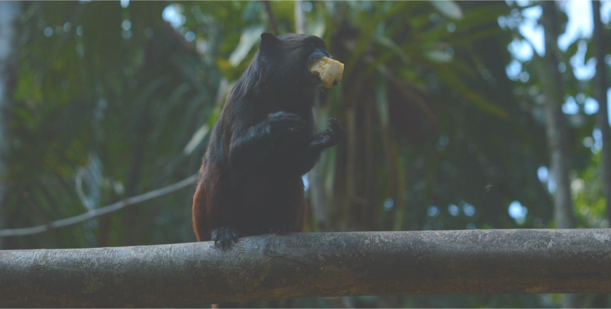

<article class="DSC_0435">
    <div>
        
        <div style="margin-top:-703px;padding-left: 148px;">
            <h1 class="El-mundo-de-los-prim">El mundo de los primates Colombianos</h1>
            <h4 class="De-acuerdo-con-el-ac">
                ​De acuerdo con el actual consenso sobre la taxonomía de primates colombianos, en el país se encuentran
                distribuidas 38 especies y 14 subespecies, incluyendo 9 especies y 6 subespecies endémicas. Esto lo
                ubica
                como el sexto país con mayor riqueza de primates en el mundo, y el tercero en la región después de
                Brasil y
                Perú. La gran diversidad de éste y otros grupos de animales en Colombia está asociada a su ubicación
                geográfica y topografía, lo que permite la confluencia de cinco grandes regiones biogeográficas: Caribe,
                Pacífico, Andina, Orinoquía y Amazonía; y la presencia de una amplia gama de ecosistemas.
            </h4>
        </div>
    </div>
</article>